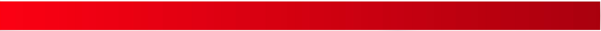
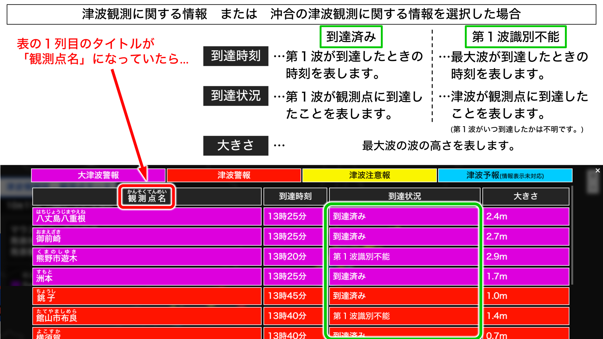

津波情報
00時00分現在
█
大津波警報
█
津波警報
█
津波注意報
█
津波予報(若干の海面変動)
以上
█
5m
～
█
3m
～
█
2m
～
█
1m
～
█
0.5m
～
█
～
0.5m
█
観測中
津波情報の取得中…
情報更新
全国
津波到達時刻・高さ
表示
観測点
海岸線
UI
選択海岸 詳細情報
観測実況 凡例
×
大津波警報
津波警報
津波注意報
津波予報
(情報表示未対応)
地域名
ちいきめい
到達時刻
到達状況
大きさ
×

×
情報提供元
・
GeoJSON地図データ
by
Natural Earth
・
GeoJSON海岸線データ
by
基盤地図情報
・
Web地図システム
by
Leaflet
・
PHPサーバー津波情報
by
MiyakojimaCam
・
津波情報
by
P2P地震情報